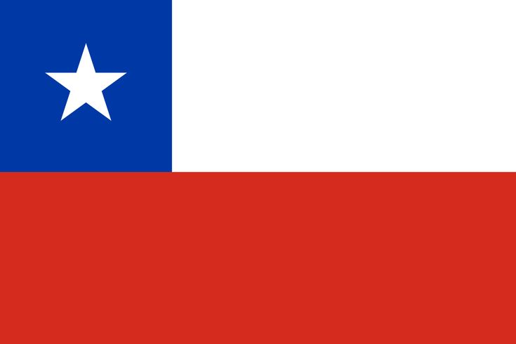

<!DOCTYPE html>
<html lang="en-US">
    <head>
        <meta charset="utf-8">
        <meta name="viewport" content="width=device-width,initial-scale=1.0">
        <title>WDD 131—Dynamic Web Fundamentals—Deilyn Ignacia Cecilia Zamudio Córdova</title>
        <meta name="description" content="Explore Deilyn Ignacia Cecilia Zamudio Córdova's personal webpage, designed as part of WDD 131 - Dynamic Web Fundamentals. Discover information about my background, my beautiful country, Chile, and useful web development resources, including links to Bootstrap, Mozilla, and W3school.">
        <meta name="author" content="Deilyn Ignacia Cecilia Zamudio Córdova">

        <link rel="preconnect" href="https://fonts.googleapis.com">
        <link rel="preconnect" href="https://fonts.gstatic.com" crossorigin>
        <link href="https://fonts.googleapis.com/css2?family=Montserrat:wght@400;700&family=Open+Sans:wght@400;600&display=swap" rel="stylesheet">
        <link rel="stylesheet" href="styles/base.css">

        <script src="scripts/getdates.js" defer></script>
    </head>
    </html>

    <body>
        <header>
            <h1>Deilyn Ignacia Cecilia Zamudio Córdova</h1>
            <span id="course-title">WDD 131 - Dynamic Web Fundamentals</span>
            <nav>
                <ul>
                    <li>
                        <a href="https://www.linkedin.com/in/deilyn-zamudio-895503224">LinkedIn</a>
                    </li>
                    <li>
                        <a href="https://byupw.instructure.com/">Canvas</a>
                    </li>
                    <li>
                        <a href="https://www.churchofjesuschrist.org/study/scriptures/bofm/mosiah/4?lang=eng&id=p9-p10#p9">Scripture</a>
                    </li>
                    <li>
                        <a href="https://byupw.instructure.com/">Final Project</a>
                    </li>
                </ul>
            </nav>
        </header>

        <main>
            <section class="card">
                <h2 class="title">About Me</h2>

                <div class="profile">
                    <div class="profile-text">
                        <p>
                            My name is Deilyn Zamudio Córdova, and I am from Chile. I love arts and musicals. 
                            I truly adore my country; it's a beautiful place with unparalleled landscapes and a rich 
                            ancient history. I have indigenous Aymara heritage from my father's side and Spanish  
                            from my mothers'. My favorite book is The Hunger Games, by Suzanne Collins.
                        </p>
                    </div>
                    <div class="profile-pic">
                        
                    </div>
                </div>

                <div class="chile">
                    <div class="flag">
                        
                        <p class="chilean-flag"><em>Official Flag of Chile</em></p>
                    </div>
                    <div class="chile-text">
                        <h3>Chile</h3>
                        <hr>
                        <p>
                            Chile, a land of incredible contrasts and breathtaking landscapes. Its flag, known as 
                            "La Estrella Solitaria" (The Lone Star), tells the Chilean story through its colors: 
                            the white represents the snow of the Andes Mountains, the blue symbolizes the sky and the 
                            Pacific Ocean, and the red recalls the blood shed by those who fought for the  
                            independence. A crucial part of Chile's history are the Mapuche people, the only 
                            Indigenous group in the American Continent who were never fully conquered by the Spanish, 
                            successfully defending their territory and culture for centuries with fierce resistance.
                        </p>
                    </div>
                </div>
            </section>

            <section class="card">
                <h2 class="title">Web Dev Resources</h2>
                
                <p>Bootstrap is a front-end development framework for creating responsive web applications.</p>
                <a class="bootstrap" href="https://getbootstrap.com/">Bootstrap</a>
                <a class="mozilla" href="https://developer.mozilla.org/en-US/">Mozilla</a>
                <a class="w3school" href="https://www.w3schools.com/">W3school</a>
            </section>
        </main>
        <footer>
            <p>&copy; <span id="currentyear"></span>✨Deilyn Zamudio Córdova✨ Chile</p>
            <p id="lastModified"></p>
        </footer>
    </body>
</html>